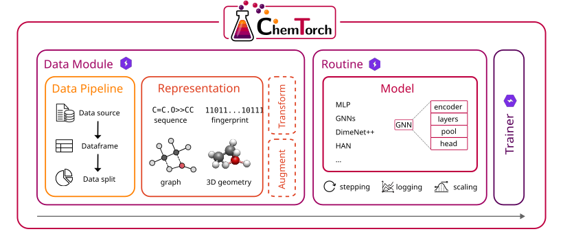
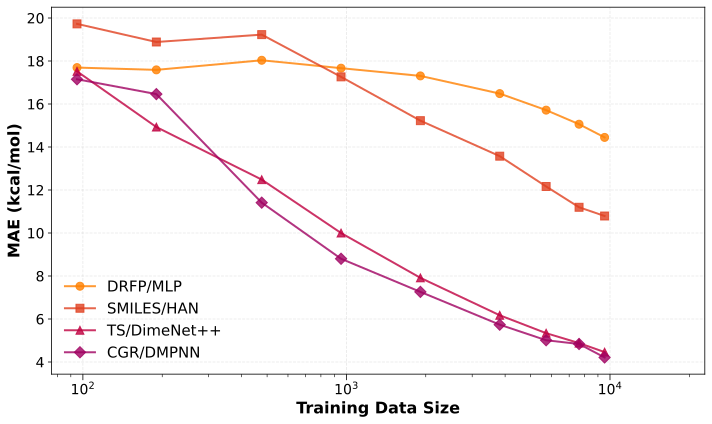

Building a ChemTorch Pipeline from Scratch#
In ChemTorch’s quick start guide we saw that you can train a model using a single command:
chemtorch +experiment=graph data_module.subsample=0.05 log=false
In this tutorial we will rebuild this exact ChemTorch pipeline from scarch! 👀
The goal is to give you a tour of the ChemTorch components and how they fit together.

Prerequisites#
Install ChemTorch as described in the quick start guide
Run this notebook from the
docs/source/examples/folder
Barrier Height Prediction#
We will train a directed message passing neural network (D-MPNN) [1] to predict reaction barrier heights of small organic reactions in gas phase.
We will use the RDB7 dataset [2] which contains the barrier heights of nearly 12,000 unimolecular organic reactions (expressed in kcal/mol). To keep training fast we will only use 5% of the data (as in the quick start command).
Thoughout the notebook we will use hyperparameters similar to those obtained from our sweeps. The exact hyperparameters can be found at
conf/saved_configs/chemtorch_benchmark/optimal_model_configs/cgr_dmpnn.yaml.
Imports#
import os
from copy import deepcopy
from functools import partial
import torch
from lightning import Trainer, seed_everything
from torch_geometric.loader import DataLoader
from torchmetrics import MeanAbsoluteError, MeanSquaredError, MetricCollection
from chemtorch.components.data_pipeline import SimpleDataPipeline
from chemtorch.components.data_pipeline.column_mapper import ColumnFilterAndRename
from chemtorch.components.data_pipeline.data_source import SingleCSVSource
from chemtorch.components.data_pipeline.data_splitter import RatioSplitter
from chemtorch.components.representation.graph import CGR
from chemtorch.components.representation.graph.featurizer import (
AtomDegreeFeaturizer,
AtomFormalChargeFeaturizer,
AtomHCountFeaturizer,
AtomHybridizationFeaturizer,
AtomIsAromaticFeaturizer,
AtomIsInRingFeaturizer,
BondInRingFeaturizer,
BondIsConjugatedFeaturizer,
BondTypeFeaturizer,
CentiAtomMassFeaturizer,
FeaturizerCompose,
OrganicAtomicNumberOneHotFeaturizer,
)
from chemtorch.components.layer import LayerStack
from chemtorch.components.layer.gnn_layer import (
DMPNNBlock,
DMPNNConv,
DMPNNStack,
EdgeToNodeEmbedding,
)
from chemtorch.components.model import MLP
from chemtorch.components.model.gnn import (
DirectedEdgeEncoder,
GNN,
GlobalPool,
)
from chemtorch.core import DataModule
from chemtorch.core.routine import RegressionRoutine
from chemtorch.core.scheduler import CosineWithWarmupLR
from chemtorch.utils import Standardizer
/home/anton/chemtorch/.venv/lib/python3.10/site-packages/tqdm/auto.py:21: TqdmWarning: IProgress not found. Please update jupyter and ipywidgets. See https://ipywidgets.readthedocs.io/en/stable/user_install.html
from .autonotebook import tqdm as notebook_tqdm
Before, we start we want to seed everything to get reproducible results :)
seed = 0
seed_everything(seed)
torch.use_deterministic_algorithms(True)
os.environ["CUBLAS_WORKSPACE_CONFIG"] = (":4096:8") # https://docs.nvidia.com/cuda/cublas/index.html#results-reproducibility
Seed set to 0
1. Data Pipeline#
In ChemTorch, the data pipeline is responsible for loading the raw data and turning into a format that can be consumed by downstream code.
Here is what the SimpleDataPipeline does:
it loads the raw data from a data source, e.g. a CSV file,
selects/renames the data columns to align with the ChemTorch API,
splits the data into train/validation/test sets.
The RDB7 CSV uses smiles for mapped reaction SMILES and dE0 for the training target.
DATA_PATH = "../data/rdb7/barriers/forward/data.csv"
pipeline = SimpleDataPipeline(
data_source=SingleCSVSource(data_path=DATA_PATH),
column_mapper=ColumnFilterAndRename(smiles="smiles", label="dE0"),
data_splitter=RatioSplitter(train_ratio=0.8, val_ratio=0.1, test_ratio=0.1),
)
data_split = pipeline()
data_split.train.head()
| smiles | label | |
|---|---|---|
| 5780 | [C:1]1([H:7])([H:8])[C:2]([H:9])=[C:3]([H:10])... | 38.70907 |
| 2767 | [o:1]1[c:2]([H:6])[n:3][n:4][c:5]1[H:7]>>[N:3]... | 111.43065 |
| 8214 | [C:1]1([H:8])([H:9])[O:2][C@@:3]2([H:10])[C:4]... | 86.70926 |
| 6326 | [O:1]=[c:2]1[o:3][c:4]([H:8])[c:5]([H:9])[c:6]... | 74.20804 |
| 2821 | [C:1]([C:2]1([C:5](=[O:6])[H:14])[C:3]([H:10])... | 119.79524 |
2. Reaction Representation#
One of the most important questions in chemical deep learning is how to represent your molecules/reactions for your desired task. One simple way to represent a molecule by its connectivity. For machine learning, a particular convenient representation is a graph, analogous to the traditional Lewis formula or SMILES strings in chemoinformatics.
For reactions, a special kind of graph is needed to encorporate both reactant and product connectivity, as well as information about bond forming and breaking. This graph is known as the Condensed Graph of Reaction (CGR) [3]. It it a graph overlay of reactant and product graphs where forming/breaking bonds carry special annotations.
As shown in the ChemTorch paper [4], the CGR provides a strong baseline for barrier height prediction but it requires atom mapping.
CGR#
In ChemTorch, each representation takes in a SMILES string and returns some kind of data object compatible with your model.
For reference see thr AbstractRepresentation interface.
The CGR representation is initilized with atom and bond featurizers which can be composed.
The following featurizers are simple RDKit featurizers preconfigured for organic molecules.
atom_featurizer = FeaturizerCompose(
[
OrganicAtomicNumberOneHotFeaturizer(),
AtomDegreeFeaturizer(),
AtomFormalChargeFeaturizer(),
AtomHCountFeaturizer(),
AtomHybridizationFeaturizer(),
AtomIsAromaticFeaturizer(),
CentiAtomMassFeaturizer(),
AtomIsInRingFeaturizer(),
]
)
bond_featurizer = FeaturizerCompose(
[
BondTypeFeaturizer(),
BondIsConjugatedFeaturizer(),
BondInRingFeaturizer(),
]
)
representation = CGR(
atom_featurizer=atom_featurizer,
bond_featurizer=bond_featurizer,
)
The CGR representation takes in atom mapped SMILES and turns them into featuriuzed graphs saved as torch_geometric.Data objects.
example_smiles = data_split.train.iloc[0]["smiles"]
example_graph = representation.construct(example_smiles)
print(example_graph)
print("node feature dimension:", example_graph.x.shape[-1])
print("edge feature dimension:", example_graph.edge_attr.shape[-1])
Data(x=[12, 88], edge_index=[2, 26], edge_attr=[26, 22], edge_origin_type=[26], smiles='[C:1]1([H:7])([H:8])[C:2]([H:9])=[C:3]([H:10])[C@@:4]2([H:11])[O:5][C@@:6]12[H:12]>>[C:1](=[C:2](/[C:3](=[C:4](\[C:6](=[O:5])[H:12])[H:11])[H:10])[H:9])([H:7])[H:8]', atom_origin_type=[12], num_nodes=12)
node feature dimension: 88
edge feature dimension: 22
Our featurization results in 88 node features and 22 edge features.
3. DataModule#
One of the heart pieces in the ChemTorch pipeline is the DataModule which extends PyTorch Lightning’s lightning.DataModule.
The data module manages data object creation and batching for training/inference.
It is initialized with
our data pipeline,
the chosen representation,
a compatible
torchdataloader class, andoptional data transforms/augmentations.
For graph data we use PyG’s DataLoader, partially configured with the batch size.
The data module will use this as a template to create train, validation, and test dataloaders.
Addtionally, we pass subsample=0.05 to only use 5% of the whole dataset for training, validation and testing.
dataloader_factory = partial(
DataLoader,
batch_size=64,
num_workers=0,
pin_memory=False,
)
data_module = DataModule(
data_pipeline=pipeline,
representation=representation,
dataloader_factory=dataloader_factory,
transform=None,
augmentations=None,
subsample=0.05
)
Let’s look at a single batch!
batch, labels = next(iter(data_module.train_dataloader()))
print(batch)
print(labels.shape)
DataBatch(x=[842, 88], edge_index=[2, 1812], edge_attr=[1812, 22], edge_origin_type=[1812], smiles=[64], atom_origin_type=[842], num_nodes=842, batch=[842], ptr=[65])
torch.Size([64])
PyTorch Geometric does graph batching by combining the individual pyg.Data objects into a single big disconnected graph (pyg.DataBatch).
4. D-MPNN Model#
ChemTorch supports any type of model compatbile with the PyTorch API.
For GNNs, ChemTorch comes with a ready to use blueprint that is initialized with the following components:
encoder: turns the node/edge features into learned embeddings.layer_stack: applies repeated graph convolutions, in our case, 12 blocks of directed message passing.To increase the expressivity of our GNN, each block adds:
a residual connection
a 2-layer feedforward network
dropout
These are applied after message passing and before ReLU.
pool: reduces node/edge embeddings to one graph embedding per reaction.head: maps the graph embeddings to the regression prediction, in our case a scalar barrier height.
Here, we manually compute the input dimension of the encoder as the combined dimesion of atom and bond features. In practice, ChemTorch automatically inferes the input dimension at runtime.
NUM_NODE_FEATURES = 88
NUM_EDGE_FEATURES = 22
DIRECTED_EDGE_ENCODER_IN_CHANNELS = NUM_NODE_FEATURES + NUM_EDGE_FEATURES
HIDDEN_CHANNELS = 256
DEPTH = 12
OUT_CHANNELS = 1
# 1. directed edge encoder
encoder=DirectedEdgeEncoder(
in_channels=DIRECTED_EDGE_ENCODER_IN_CHANNELS,
out_channels=HIDDEN_CHANNELS,
)
# 2. directed message passing layer stack
layer_block = DMPNNBlock(
graph_conv=DMPNNConv(
in_channels=HIDDEN_CHANNELS,
out_channels=HIDDEN_CHANNELS,
),
residual=True,
ffn=True,
dropout=0.16713747610272822,
act="relu",
hidden_channels=HIDDEN_CHANNELS
)
layer_stack = DMPNNStack(
dmpnn_blocks=LayerStack(
layer=layer_block,
depth=12,
),
edge_to_node_embedding=EdgeToNodeEmbedding(
embedding_size=HIDDEN_CHANNELS,
num_node_features=NUM_NODE_FEATURES,
),
)
# 3. pooling function
pool = GlobalPool(aggr="add")
# 4. prediction head
head = MLP(
in_channels=HIDDEN_CHANNELS,
hidden_size=HIDDEN_CHANNELS,
num_hidden_layers=4,
out_channels=OUT_CHANNELS,
dropout=0.012368200731827074,
act="relu",
)
# assmeble everything into the GNN
model = GNN(
encoder=encoder,
layer_stack=layer_stack,
pool=pool,
head=head,
)
print(model)
GNN(
(encoder): DirectedEdgeEncoder(
(edge_init): Linear(in_features=110, out_features=256, bias=True)
)
(layer_stack): DMPNNStack(
(dmpnn_blocks): LayerStack(
(layers): ModuleList(
(0-11): 12 x DMPNNBlock(
(graph_conv): DMPNNConv()
(activation): ReLU()
(norm): Identity()
(dropout): Dropout(p=0.16713747610272822, inplace=False)
(ffn_norm_in): Identity()
(ffn_linear1): Linear(in_features=256, out_features=512, bias=True)
(ffn_linear2): Linear(in_features=512, out_features=256, bias=True)
(ffn_act_fn): ReLU()
(ffn_norm_out): Identity()
(ffn_dropout1): Dropout(p=0.16713747610272822, inplace=False)
(ffn_dropout2): Dropout(p=0.16713747610272822, inplace=False)
)
)
)
(edge_to_node_embedding): EdgeToNodeEmbedding(
(linear): Linear(in_features=344, out_features=256, bias=True)
(activation): ReLU()
(aggregation): SumAggregation()
)
)
(pool): GlobalPool()
(head): MLP(
(activation): ReLU()
(layers): Sequential(
(0): Dropout(p=0.012368200731827074, inplace=False)
(1): Linear(in_features=256, out_features=256, bias=True)
(2): ReLU()
(3): Dropout(p=0.012368200731827074, inplace=False)
(4): Linear(in_features=256, out_features=256, bias=True)
(5): ReLU()
(6): Dropout(p=0.012368200731827074, inplace=False)
(7): Linear(in_features=256, out_features=256, bias=True)
(8): ReLU()
(9): Dropout(p=0.012368200731827074, inplace=False)
(10): Linear(in_features=256, out_features=256, bias=True)
(11): ReLU()
(12): Dropout(p=0.012368200731827074, inplace=False)
(13): Linear(in_features=256, out_features=1, bias=True)
)
)
)
Let’s test whether the model works!
with torch.no_grad():
predictions = model(deepcopy(batch))
print(predictions.shape)
print(predictions[:10])
torch.Size([64, 1])
tensor([[ 0.0249],
[-0.0119],
[-0.0105],
[ 0.0114],
[ 0.0183],
[ 0.0400],
[-0.0074],
[ 0.0343],
[ 0.0340],
[ 0.0237]])
Currently, the predictions are of course random. Now, we we want to train the model!
5. Routine#
To reduce boilerplate PyTorch code, ChemTorch builds on PyTorch Lightning’s LightningModule and provides a common Routine abstraction that handles training and inference logic such as metric logging, optimization steps, learning-rate scheduling, and prediction rescaling for regression tasks.
The Routine wraps our PyTorch model together with its loss function, optimizer, learning-rate scheduler, metrics, and prediction postprocessing.
The Standardizer normalizes targets using statistics computed from the training set and later reverses this transformation to compute metrics and return predictions in the original scale.
# train data statistics from previous experiment
TRAIN_LABEL_MEAN = 80.0102253144654
TRAIN_LABEL_STD = 21.684054853890036
metrics = {
"train": MetricCollection(
{"rmse": MeanSquaredError(squared=False)}
),
"val": MetricCollection(
{"rmse": MeanSquaredError(squared=False)}
),
"test": MetricCollection(
{
"mae": MeanAbsoluteError(),
"rmse": MeanSquaredError(squared=False),
}
),
}
routine = RegressionRoutine(
model=model,
standardizer=Standardizer(mean=TRAIN_LABEL_MEAN, std=TRAIN_LABEL_STD),
loss=torch.nn.MSELoss(),
optimizer=partial(
torch.optim.AdamW,
lr=0.0005682742759208353,
weight_decay=0.0006307405281515754
),
lr_scheduler={
"scheduler": partial(
CosineWithWarmupLR,
num_warmup_steps=10,
num_training_steps=100,
start_factor=1.0e-6,
end_factor=1.0,
eta_min=0.0,
),
"interval": "epoch",
"frequency": 1,
},
metrics=metrics,
)
6. Trainer#
Finally, Lightning’s Trainer orchestrates fitting and testing.
For the tutorial we use a maximum of 20 epoch, no logger, and disable checkpointing.
When running a real experiment, we would use a higher maximum number of epochs, the Weights & Biases Logger, and enable checkpointing.
MAX_EPOCHS = 20
trainer = Trainer(
max_epochs=MAX_EPOCHS,
accelerator="auto",
logger=False,
enable_checkpointing=False,
gradient_clip_val=1.0,
log_every_n_steps=1,
)
GPU available: False, used: False
TPU available: False, using: 0 TPU cores
To train our model, we simply call fit() and pass the routine and the data module.
The trainer will handle the rest for us.
trainer.fit(routine, datamodule=data_module)
| Name | Type | Params | Mode
-----------------------------------------------------------
0 | model | GNN | 4.3 M | train
1 | loss | MSELoss | 0 | train
2 | train_metrics | MetricCollection | 0 | train
3 | val_metrics | MetricCollection | 0 | train
4 | test_metrics | MetricCollection | 0 | train
-----------------------------------------------------------
4.3 M Trainable params
0 Non-trainable params
4.3 M Total params
17.298 Total estimated model params size (MB)
200 Modules in train mode
0 Modules in eval mode
Sanity Checking DataLoader 0: 0%| | 0/1 [00:00<?, ?it/s]
/home/anton/chemtorch/.venv/lib/python3.10/site-packages/lightning/pytorch/trainer/connectors/data_connector.py:433: The 'val_dataloader' does not have many workers which may be a bottleneck. Consider increasing the value of the `num_workers` argument` to `num_workers=7` in the `DataLoader` to improve performance.
/home/anton/chemtorch/.venv/lib/python3.10/site-packages/lightning/pytorch/trainer/connectors/data_connector.py:433: The 'train_dataloader' does not have many workers which may be a bottleneck. Consider increasing the value of the `num_workers` argument` to `num_workers=7` in the `DataLoader` to improve performance.
Epoch 9: 100%|██████████| 8/8 [00:05<00:00, 1.41it/s, train_loss=0.901, val_loss_step=0.670, val_loss_epoch=0.670]
/home/anton/chemtorch/.venv/lib/python3.10/site-packages/torch/optim/lr_scheduler.py:209: UserWarning: The epoch parameter in `scheduler.step()` was not necessary and is being deprecated where possible. Please use `scheduler.step()` to step the scheduler. During the deprecation, if epoch is different from None, the closed form is used instead of the new chainable form, where available. Please open an issue if you are unable to replicate your use case: https://github.com/pytorch/pytorch/issues/new/choose.
warnings.warn(EPOCH_DEPRECATION_WARNING, UserWarning)
Epoch 19: 100%|██████████| 8/8 [00:07<00:00, 1.14it/s, train_loss=0.576, val_loss_step=0.588, val_loss_epoch=0.588]
`Trainer.fit` stopped: `max_epochs=20` reached.
Epoch 19: 100%|██████████| 8/8 [00:07<00:00, 1.14it/s, train_loss=0.576, val_loss_step=0.588, val_loss_epoch=0.588]
We can test the model in a smilar way.
trainer.test(routine, datamodule=data_module)
/home/anton/chemtorch/.venv/lib/python3.10/site-packages/lightning/pytorch/trainer/connectors/data_connector.py:433: The 'test_dataloader' does not have many workers which may be a bottleneck. Consider increasing the value of the `num_workers` argument` to `num_workers=7` in the `DataLoader` to improve performance.
Testing DataLoader 0: 100%|██████████| 1/1 [00:00<00:00, 5.46it/s]
────────────────────────────────────────────────────────────────────────────────────────────────────────────────────────
Test metric DataLoader 0
────────────────────────────────────────────────────────────────────────────────────────────────────────────────────────
test_mae 14.630847930908203
test_rmse 20.482280731201172
────────────────────────────────────────────────────────────────────────────────────────────────────────────────────────
[{'test_mae': 14.630847930908203, 'test_rmse': 20.482280731201172}]
Our D-MPNN model on the CGR representation achieves a mean absolute error (MAE) in the range of 12-15 kcal/mol which aligns with the values reported in the ChemTorch benchmark. Of course this isn’t even close to accurate but recall that we trained on only 5% of the data! Scaling training to the full dataset, this model achieves an MAE of approx. 4.10 kcal/mol, as seen in the figure below (pink line).

References#
[1] Yang, K.; Swanson, K.; Jin, W.; Coley, C.; Eiden, P.; Gao, H.; Guzman-Perez, A.; Hopper, T.; Kelley, B.; Mathea, M. Analyzing learned molecular representations for property prediction. J. Chem. Inf. Model. 2019, 59, 3370– 3388, DOI: 10.1021/acs.jcim.9b00237
[2] Spiekermann, K.; Pattanaik, L.; Green, W. H. High accuracy barrier heights, enthalpies, and rate coefficients for chemical reactions. Sci. Data 2022, 9, 417 DOI: 10.1038/s41597-022-01529-6
[3] Heid, E.; Green, W. H. Machine learning of reaction properties via learned representations of the condensed graph of reaction. J. Chem. Inf. Model. 2022, 62, 2101– 2110, DOI: 10.1021/acs.jcim.1c00975
[4] De Landsheere, J.; Zamyatin, A.; Karwounopoulo, J.; Heid, E. ChemTorch: A Deep Learning Framework for Benchmarking and Developing Chemical Reaction Property Prediction Models. J. Chem. Inf. Model. 2026, 66, 2434-2442, DOI: 10.1021/acs.jcim.5c02645